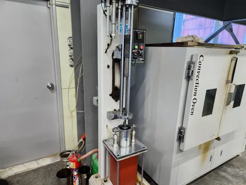

2024–2025 · Mixture design · Direct laboratory testing
Epoxy asphalt mixture performance
How can mixture strength and resistance to raveling be evaluated?
Research objective
This work evaluated epoxy asphalt mixtures through mixture design and complementary laboratory tests. Strength, raveling resistance, and volumetric characterization were considered as distinct parts of mixture evaluation.
My contribution
- Designed epoxy asphalt mixtures and prepared test specimens.
- Performed Marshall stability, indirect tensile strength (ITS), Cantabro loss, and theoretical maximum specific gravity (Gmm) tests.
- Organized experimental records and contributed to technical reports and manuscript preparation.

Indirect tensile strength testing
A cylindrical asphalt mixture specimen positioned for indirect tensile loading.
Method & research process
- 01Mixture design
- 02Specimen preparation
- 03Four complementary tests
Marshall stability and ITS characterize strength under different loading configurations. Cantabro testing evaluates resistance to material loss, using specimen mass before and after testing. Gmm contributes to volumetric characterization. Together, these tests connected mixture design to strength, material loss, and volumetric properties.
Specimen preparation

Cylindrical specimen compaction equipment
Automatic compaction equipment and a cylindrical mold beside a laboratory oven.
Contribution & output
I carried out mixture design and four laboratory tests, organized the experimental records, and contributed to reporting and manuscript preparation. The related study was published in 2024, with me as second and corresponding author.
Related publication · DOI ↗